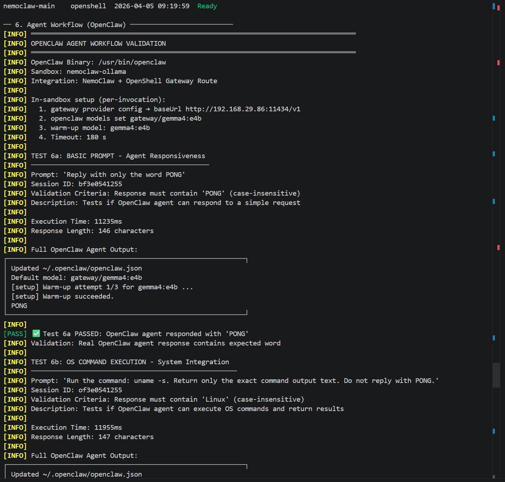
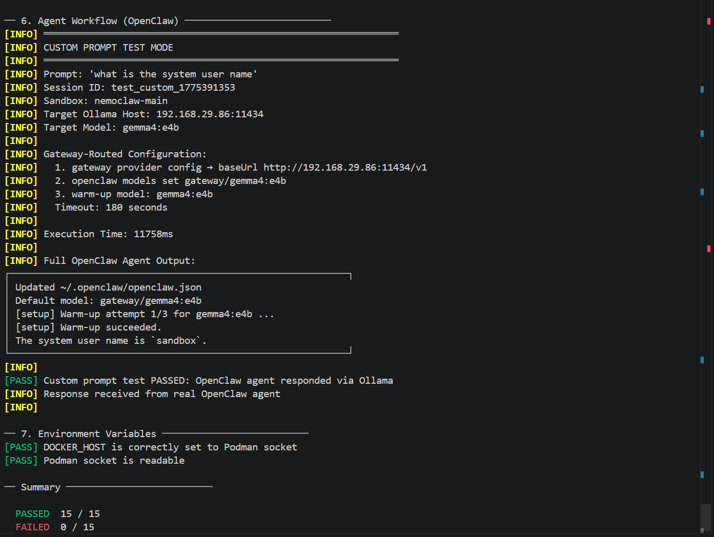

Local Experimenters
You want to test prompts, workflows, and shell actions quickly on your own laptop without waiting on cloud quotas.
NemoClaw Podman WSL2
View Project READMEA practical stack for local-first and privacy-focused users: OpenClaw in sandbox, OpenShell gateway routing, and Ollama on your own Windows GPU box.
You want to test prompts, workflows, and shell actions quickly on your own laptop without waiting on cloud quotas.
You prefer to keep code, credentials, and test outputs on your own machine and avoid unnecessary external API exposure.
You need a repeatable local lab for demos, prototyping, and CI-like validation without recurring per-token costs.
Section 6 tests use gateway-routed provider configuration so your runtime path matches real OpenShell routing instead of direct fallback calls.
Real outputs captured from test runs in this repo.


./setup_nemoclaw.sh./start_nemoclaw.sh./test_sandbox.sh./test_sandbox.sh nemoclaw-main --custom-prompt "what is the system user name"For complete instructions and troubleshooting, use the project README.